Ch3 — L'amplificateur linéaire intégré (ALI) en régime linéaire
Présentation générale de l'ALI (brochage, alimentation symétrique, régimes linéaire/saturé), le modèle de l'ALI idéal « de gain infini », et les 5 montages fondamentaux (suiveur, non inverseur, inverseur, intégrateur, dérivateur). Les 14 questions du cours sont résolues intégralement, avec les écarts possibles à la réponse linéaire (saturations en tension et en courant). AM2 · P2030 · Semestre 3 — D. Courtois, 17/09/2026.
1. Présentation générale d'un Amplificateur Linéaire Intégré (ALI)
1.1 · Le brochage de l'ALI
Trois broches principales définissent son fonctionnement électrique :
- une entrée non-inverseuse (+), portée au potentiel \(v_+\) ;
- une entrée inverseuse (−), portée au potentiel \(v_-\) ;
- une sortie, portée au potentiel \(v_s\), qui est directement la réponse du montage (\(s=v_s\)).
Selon le montage, le signal d'entrée est appliqué directement sur l'entrée (+) (\(e=v_+\)) ou (−) (\(e=v_-\)), ou indirectement. On note \(\varepsilon=v_+-v_-\) la tension différentielle d'entrée.
L'ALI étant actif, il a besoin d'un apport d'énergie pour fonctionner : il est alimenté, le plus souvent par une source de tension idéale continue symétrique \(+15\text{ V}/-15\text{ V}\). Trois broches supplémentaires apparaissent donc autour de l'ALI :
- une arrivée d'alimentation \(+V_{CC}=+15\) V ;
- une arrivée d'alimentation \(-V_{CC}=-15\) V ;
- une masse, référence \(V=0\) pour tous les potentiels.
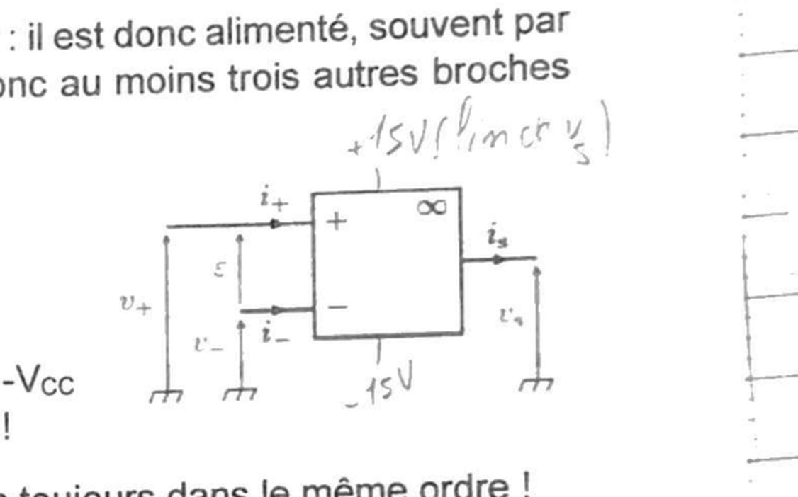
Schémas conventionnels : en rectangle ou en triangle, avec (+) et (−) pas toujours dans le même ordre d'un schéma à l'autre — il faut toujours vérifier sur le dessin lui-même.
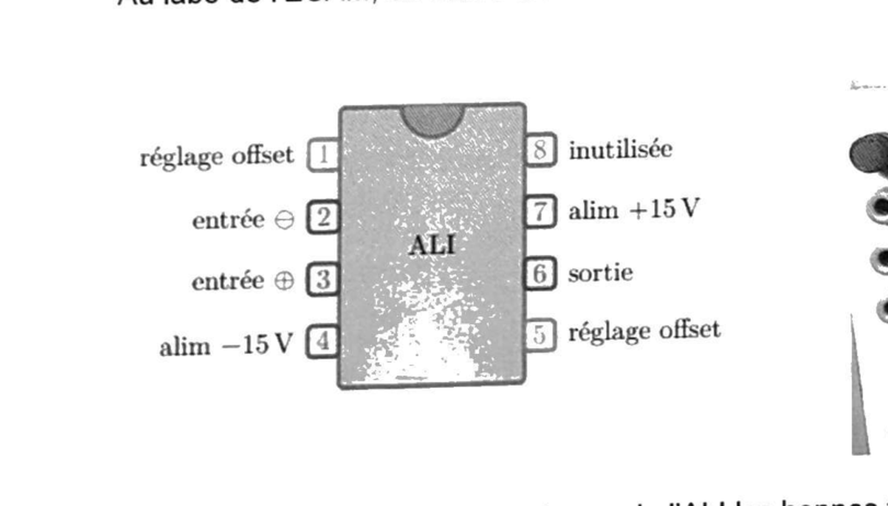
Attribuer à chaque borne de l'ALI les bonnes fiches de la platine utilisée au labo de l'ECAM.
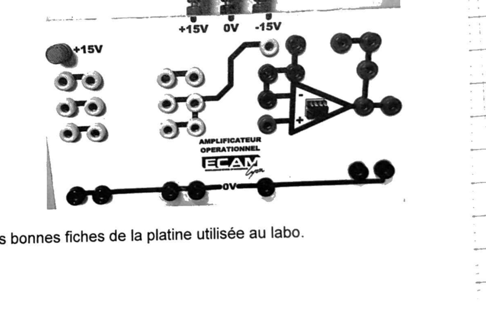
En comparant le brochage DIP8 officiel (ci-dessus) au triangle ALI imprimé sur la platine, chaque broche du boîtier doit être reliée par un fil à la fiche de même rôle électrique :
| Broche DIP8 | Rôle | Fiche de la platine à relier |
|---|---|---|
| 2 | entrée (−) | fiche « − » (entrée du triangle imprimé, en haut) |
| 3 | entrée (+) | fiche « + » (entrée du triangle imprimé, en bas) |
| 6 | sortie \(v_s\) | fiche de sortie, à droite du triangle imprimé |
| 7 | alim \(+V_{CC}\) | rail « +15 V » en haut de la platine |
| 4 | alim \(-V_{CC}\) | rail « −15 V » en haut de la platine |
| masse du montage | référence \(0\) V | rail « 0 V » (bus noir en bas de la platine) |
| 1, 5 | réglage offset | non utilisées en usage standard au labo |
| 8 | inutilisée | — |
1.2 · ALImentation
Au labo : l'alimentation symétrique est obtenue en branchant en série deux sources \(0\)–\(30\) V (bouton de gauche du « slave » enfoncé, bouton de droite du « master » remonté), et en plaçant la masse (fil noir) entre les deux sources. En ajustant la différence de potentiel du master à \(15\) V, l'entrée du slave se retrouve à \(-V_{CC}=-15\) V (fil bleu) et la sortie du master à \(+V_{CC}=+15\) V (fil rouge).
1.3 · Deux régimes de fonctionnement de l'ALI : linéaire (stable) ou saturé (instable)
Un montage à ALI peut être instable, car ce composant est actif. Un signal de sortie ne pouvant jamais vraiment diverger, un système instable donne une réponse dans un état saturé \(s=\pm V_{sat}\approx\pm V_{CC}\), sans relation linéaire avec l'entrée. Sinon, quand le système est stable, la réponse de l'ALI est linéaire.
- Régime linéaire : \(-V_{sat}
Une boucle de rétroaction sur la borne inverseuse (−) stabilise le montage et permet le fonctionnement de l'ALI en régime linéaire. Cette rétroaction négative se traduit par une connexion entre la borne de sortie et la borne (−), par une branche (fil(s), résistance(s), condensateur(s)).
- Régime saturé : \(s=\pm V_{sat}\), indépendamment de l'entrée — la relation entrée-sortie n'est pas linéaire.
L'absence de rétroaction sur la borne (−) déstabilise le montage et entraîne le fonctionnement en régime saturé. Cela se traduit soit par l'absence de connexion entre la sortie et les entrées, soit par une rétroaction positive sur (+) (sortie et borne (+) connectées par une branche).
Visualiser sur le graphique le gain \(A_d\), ainsi que les domaines de saturation et de linéarité.
Autour de \(\varepsilon=0\), la caractéristique \(v_s=f(\varepsilon)\) est une droite de pente \(A_d\) (régime linéaire) ; dès que \(v_s\) atteint \(\pm V_{sat}\), la courbe devient horizontale (régime saturé), car \(v_s\) ne peut physiquement pas dépasser les tensions d'alimentation.
Prédire pour chaque montage ci-dessous si l'ALI fonctionne en régime linéaire ou saturé.
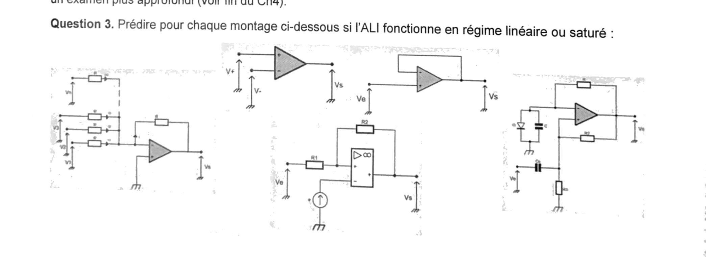
Montage 1 (à gauche) — trois entrées \(v_1,v_2,v_3\) via des résistances \(R\), plus une résistance de contre-réaction \(R\) entre la sortie et ce même nœud d'entrée.
Montage 2 (haut, au centre-gauche) — \(V_+\) et \(V_-\) imposés directement et indépendamment sur les deux entrées, sortie \(v_s\) non reconnectée.
Montage 3 (haut, au centre-droit) — \(v_e\) directement sur une entrée, boucle reliant la sortie directement à l'autre entrée.
Montage 4 (à droite) — réseau diode + condensateur sur une branche, résistance \(R_2\) rebouclant la sortie vers cette même branche.
2. Un ALI idéal plus simple que l'ALI réel
2.1 · Le modèle de l'ALI idéal
En réalité, \(i_e\approx10^{-8}\)–\(10^{-11}\) A, soit \(R_{entrée}\approx10^{9}\)–\(10^{12}\ \Omega\), et \(R_{sortie}\approx10\ \Omega\) : le modèle idéal est donc une bonne approximation.
2.2 · Le modèle de l'ALI idéal de gain infini (adopté par défaut)
On ajoute une seconde hypothèse : \(A_d\to\infty\). On obtient alors :
- en régime linéaire : \(\varepsilon=0\ \Leftrightarrow\ v_+=v_-\) ;
- en régime saturé : \(v_s=+V_{sat}\) si \(\varepsilon>0\ (v_+>v_-)\), et \(v_s=-V_{sat}\) si
\(\varepsilon<0\ (v_+
Tracer la courbe \(v_s=f(\varepsilon)\) (similaire à celle de Q2) dans le cas d'un ALI idéal « de gain infini ».
Quand \(A_d\to\infty\), la pente de la zone linéaire (Q2) devient infinie : la zone linéaire se réduit à un unique segment vertical en \(\varepsilon=0\). On obtient une caractéristique en créneau (fonction signe), typique d'un comparateur idéal.
En réalité \(A_d\approx2\times10^{5}\), soit \(\varepsilon\approx10^{-4}\) V en régime linéaire pour des tensions de sortie usuelles : le modèle « de gain infini » est donc lui aussi une bonne approximation.
Le schéma équivalent d'un ALI réel est donné ci-contre. Discuter des différences avec un ALI idéal de gain infini.
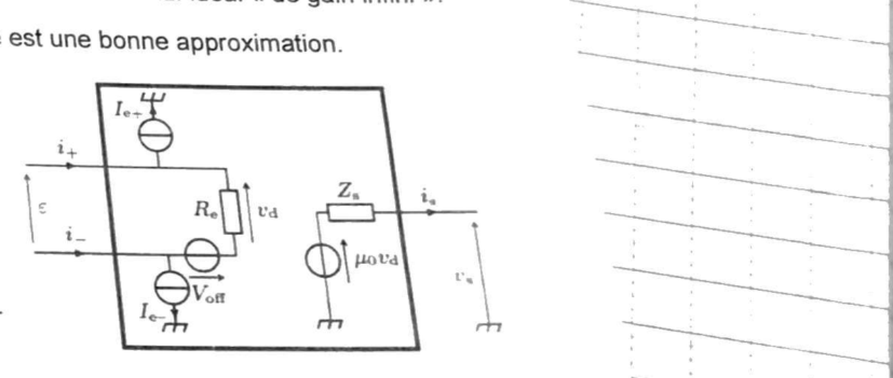
En comparant terme à terme avec les deux hypothèses du modèle idéal de gain infini (§2.1–2.2) :
| Grandeur | Modèle idéal (gain infini) | ALI réel (schéma ci-dessus) |
|---|---|---|
| Résistance d'entrée \(R_e\) | \(\to\infty\) | finie (\(\approx10^9\)–\(10^{12}\ \Omega\)) |
| Courants de polarisation \(I_{e+},I_{e-}\) | nuls | non nuls, résiduels (\(\approx10^{-8}\)–\(10^{-11}\) A) |
| Tension de décalage \(V_{off}\) | nulle | non nulle (dissymétrie interne du composant) |
| Gain différentiel \(\mu_0\) | \(\to\infty\) | fini (\(\approx2\times10^5\)) |
| Impédance de sortie \(Z_s\) | \(\to0\) | non nulle (\(\approx\)qq dizaines de \(\Omega\)) |
3. Principaux montages en régime linéaire (\(\varepsilon=0\Leftrightarrow v_+=v_-\))
3.1 · Le montage suiveur
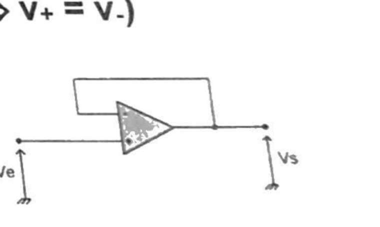
En utilisant les relations du modèle de l'ALI idéal de gain infini, montrer que pour un montage suiveur \(v_s=v_e\) (donc \(H=1\)).
La borne (+) reçoit directement \(v_e\) : \(v_+=v_e\). Le fil reliant la sortie à la borne (−) impose \(v_-=v_s\). La rétroaction se fait exclusivement sur (−), donc l'ALI fonctionne en régime linéaire (§1.3), ce qui donne \(v_+=v_-\) :
\[ v_e=v_+=v_-=v_s \]En exprimant la tension \(u_0\) aux bornes d'une résistance de charge \(R_0\) pour deux configurations différentes (sans ou avec un montage suiveur inséré), réfléchir à l'intérêt d'un tel montage au labo, quand on utilise une source de tension réelle, ou quand on connecte des filtres passifs analogiques en cascade.
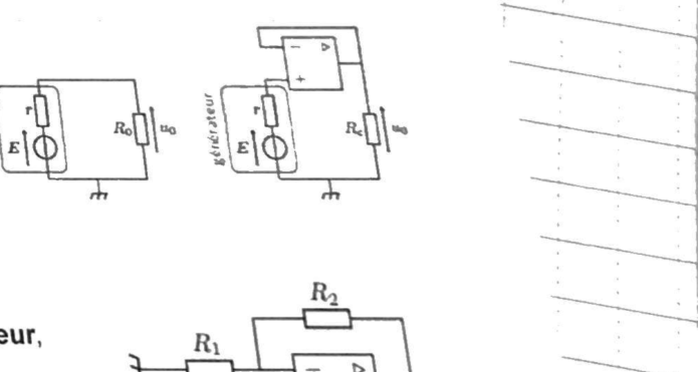
Sans suiveur (générateur réel \(E,r\) directement relié à \(R_0\)) : un courant \(i=E/(R_0+r)\) circule dans la maille, et \(u_0\) est donnée par un pont diviseur de tension :
\[ u_0=E\cdot\frac{R_0}{R_0+r} \]Cette tension \(u_0\) dépend de \(R_0\) : le générateur réel est « chargé » par \(R_0\), sa tension de sortie chute d'autant plus que \(R_0\) est faible (comparable à \(r\)).
Avec suiveur inséré entre le générateur et \(R_0\) : l'entrée (+) du suiveur, de résistance d'entrée infinie (\(i_+=0\)), ne tire aucun courant du générateur \((E,r)\) — il n'y a donc aucune chute de tension dans \(r\), et \(v_e=E\) exactement (pas de division de tension). D'après Q6, \(v_s=v_e=E\). L'ALI ayant une résistance de sortie nulle (modèle idéal), cette tension \(v_s=E\) est ensuite délivrée à \(R_0\) sans chute supplémentaire, quel que soit le courant demandé par \(R_0\) :
\[ u_0=v_s=E,\qquad\text{indépendamment de }R_0\text{ et de }r. \]3.2 · Le montage amplificateur non inverseur
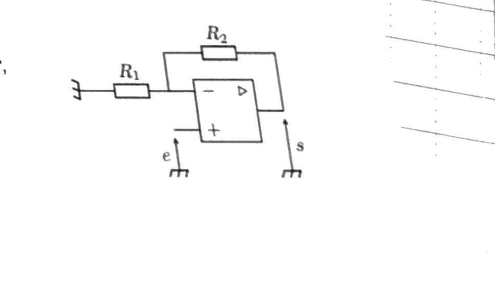
Montrer que, pour un montage amplificateur non inverseur, \(v_s=v_e\times\left(1+\dfrac{R_2}{R_1}\right)\) (donc \(H=1+\dfrac{R_2}{R_1}>1\)). On pourra utiliser un pont diviseur de tension ou une LNTP.
Méthode du pont diviseur : la rétroaction se fait sur (−), qui est le point milieu du pont diviseur \(R_1\)–\(R_2\) entre la masse (\(0\) V, via \(R_1\)) et la sortie \(v_s\) (via \(R_2\)), sans courant prélevé sur ce nœud (\(i_-=0\)) :
\[ v_-=v_s\cdot\frac{R_1}{R_1+R_2} \]La borne (+) reçoit directement \(v_e\) : \(v_+=v_e\). Rétroaction exclusive sur (−) ⟹ régime linéaire ⟹ \(v_+=v_-\) :
\[ v_e=v_s\cdot\frac{R_1}{R_1+R_2}\ \Longrightarrow\ v_s=v_e\cdot\frac{R_1+R_2}{R_1} \]Exemple : exprimer \(V_A\) dans le cas ci-contre.
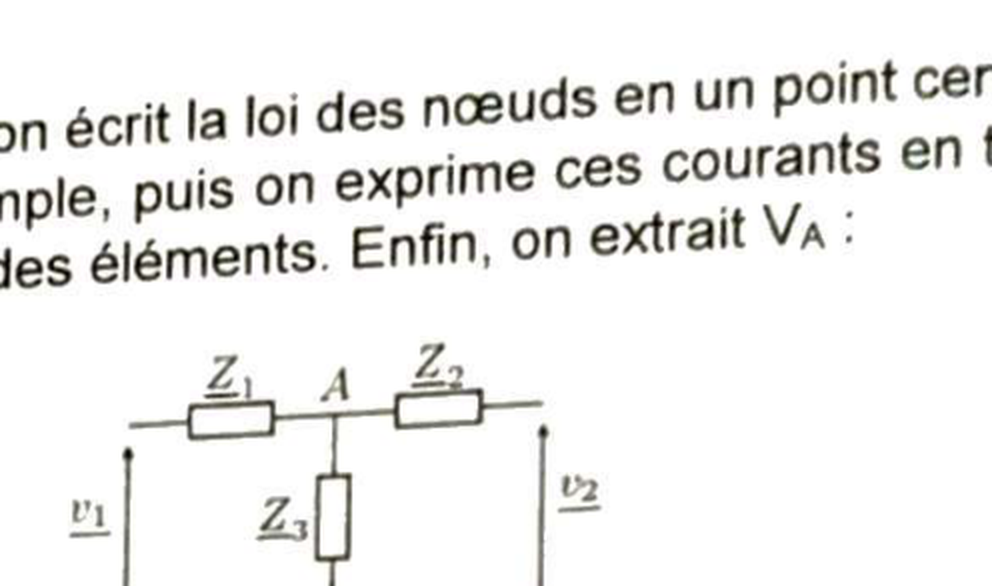
Trois branches arrivent en \(A\) : \(v_1\) via \(\underline Z_1\), \(v_2\) via \(\underline Z_2\), et la masse (potentiel \(0\)) via \(\underline Z_3\). En appliquant directement la formule de Millman avec \(n=3\) et \(V_3=0\) :
3.3 · Le montage amplificateur inverseur
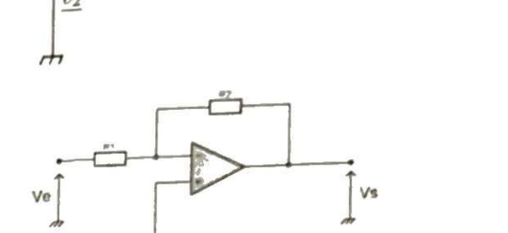
Montrer que, pour un montage amplificateur inverseur, \(v_s=v_e\times\left(-\dfrac{R_2}{R_1}\right)\) (donc \(H=-\dfrac{R_2}{R_1}\), déphasage \(\pi\)).
La borne (+) est reliée à la masse : \(v_+=0\). Rétroaction sur (−) exclusivement ⟹ régime linéaire ⟹ \(v_-=v_+=0\) : c'est une masse virtuelle. Comme \(i_-=0\) (ALI idéal), le courant qui traverse \(R_1\) (de \(v_e\) vers le nœud (−)) traverse intégralement \(R_2\) (du nœud (−) vers \(v_s\)) :
\[ i_1=\frac{v_e-v_-}{R_1}=\frac{v_e}{R_1}\ ,\qquad i_1=\frac{v_--v_s}{R_2}=\frac{-v_s}{R_2} \] \[ \frac{v_e}{R_1}=\frac{-v_s}{R_2}\ \Longrightarrow\ v_s=-v_e\cdot\frac{R_2}{R_1} \]Remarque 1. Selon les valeurs relatives de \(R_1\) et \(R_2\), ce montage amplifie
(\(R_2>R_1\)) ou atténue (\(R_2 Remarque 2. Contrairement aux deux montages précédents (suiveur, non inverseur), l'impédance
d'entrée de ce montage vue par \(v_e\) est \(R_1\) (finie, pas infinie) : un montage amplificateur
inverseur inséré dans un circuit plus complexe peut donc affecter les sections en amont
(contrairement au suiveur, cf. Q7).
3.4 · Le montage intégrateur
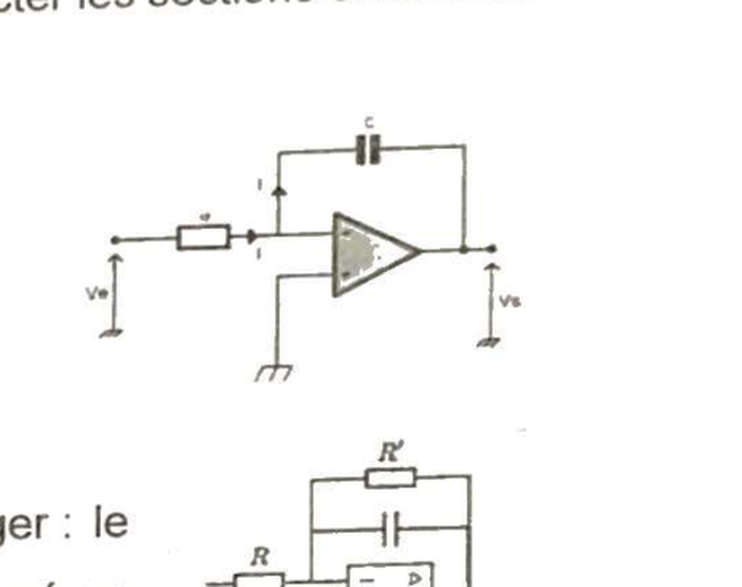
Montrer que, pour un montage intégrateur, \(v_s(t)=v_s(0)-\dfrac{1}{RC}\displaystyle\int_0^t v_e(t')\,dt'\) (donc \(\underline H=-\dfrac{1}{jRC\omega}\)). On exprimera la LNTP à la borne (−) en complexes avant de passer en temporel.
Comme en Q10, \(v_+=0\) (masse) et la rétroaction est exclusivement sur (−) : \(v_-=v_+=0\) (masse virtuelle). En complexes, le courant traversant \(R\) (de \(\underline{v_e}\) vers le nœud (−)) est intégralement transmis à \(C\) (de (−) vers \(\underline{v_s}\), \(i_-=0\)) :
\[ \underline{i_1}=\frac{\underline{v_e}-0}{R}=\frac{\underline{v_e}}{R}\ ,\qquad \underline{i_C}=j C\omega\,(0-\underline{v_s})=-jC\omega\,\underline{v_s} \] \[ \frac{\underline{v_e}}{R}=-jC\omega\,\underline{v_s}\ \Longrightarrow\ \underline H=\frac{\underline{v_s}}{\underline{v_e}}=-\frac{1}{jRC\omega} \]Repassage au temporel : la relation \(i_1=i_C\) s'écrit, en instantané, \(\dfrac{v_e(t)}{R}=-C\dfrac{dv_s}{dt}\), soit \(\dfrac{dv_s}{dt}=-\dfrac{v_e(t)}{RC}\). En intégrant entre \(0\) et \(t\) :
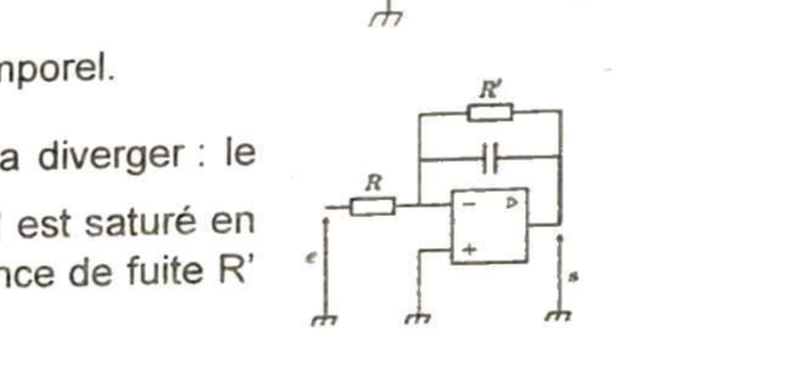
3.5 · Le montage dérivateur
Schématiser le montage dérivateur qui suit le comportement \(v_s(t)=-RC\dfrac{dv_e(t)}{dt}\).
Le montage dérivateur s'obtient en échangeant les rôles de \(R\) et \(C\) par rapport au montage intégrateur (§3.4) : le condensateur \(C\) passe en entrée (en série avec \(v_e\)), et la résistance \(R\) passe en contre-réaction (entre la sortie et (−)). (+) reste relié à la masse.
4. Des écarts possibles à la réponse linéaire
Même dans le cadre de l'ALI idéal, les réponses \(v_s\) réellement observées peuvent différer de celles prédites au §3, pour plusieurs raisons.
Saturation en tension
Puisque \(v_{s,max}=V_{sat}\), une saturation en tension peut se produire si le gain du montage, ou si l'amplitude \(E_m\) du signal d'entrée, sont trop élevés.
Proposer une valeur limite pour \(R_2\) dans le cas d'un montage amplificateur inverseur avec un signal d'entrée tel que \(E_m=5{,}0\) V et une résistance \(R_1=100\ \Omega\). Sur un même graphique, tracer l'allure de l'oscillogramme de \(v_s(t)\) dans deux cas distincts : pour \(R_2=200\ \Omega\) et pour \(R_2=400\ \Omega\).
D'après Q10, le montage inverseur donne \(v_s=-v_e\times R_2/R_1\). Avec \(v_e\) sinusoïdal d'amplitude \(E_m\), l'amplitude de sortie attendue (sans saturation) est \(|v_s|_{max}=E_m\cdot R_2/R_1\). Pour rester en régime linéaire, il faut que cette amplitude reste sous \(V_{sat}\approx V_{CC}=15\) V (alimentation \(\pm15\) V, §1.1) :
\[ E_m\cdot\frac{R_2}{R_1}\le V_{sat}\ \Longrightarrow\ R_2\le\frac{V_{sat}\cdot R_1}{E_m} =\frac{15\times100}{5{,}0} \]Vérification sur les deux cas demandés :
- \(R_2=200\ \Omega<300\ \Omega\) : gain \(=2\), amplitude idéale \(=2\times5{,}0=10\) V \(<15\) V — pas de saturation, sinusoïde propre \(\pm10\) V.
- \(R_2=400\ \Omega>300\ \Omega\) : gain \(=4\), amplitude idéale \(=4\times5{,}0=20\) V \(>15\) V — écrêtage à \(\pm15\) V au lieu des \(\pm20\) V attendus.
Saturation en courant
Un ALI ne peut délivrer un courant de sortie trop important. Si la résistance de charge est trop faible, la saturation en courant (\(i_{s,max}\approx20\) mA pour un ALI type LM741) est atteinte, et la tension de sortie en est affectée.
Sur un même graphique, tracer l'allure de l'oscillogramme de \(v_s(t)\) d'un montage suiveur dont le signal d'entrée est sinusoïdal symétrique, d'amplitude \(6{,}0\) V, dans deux cas distincts : lorsque l'ALI est en sortie ouverte, et lorsque la sortie de l'ALI est branchée à une charge de résistance \(200\ \Omega\).
Sortie ouverte : aucun courant n'est demandé à l'ALI (\(i_s=0\)), donc pas de saturation en courant possible. D'après Q6, \(v_s=v_e\) : sinusoïde propre d'amplitude \(6{,}0\) V.
Sortie chargée par \(R_0=200\ \Omega\) : le courant délivré par l'ALI est \(i_s=v_s/R_0\). La saturation en courant est atteinte dès que \(|i_s|=i_{s,max}\), soit pour \(|v_s|=i_{s,max}\times R_0\) :
\[ |v_s|_{max,\,courant}=20\times10^{-3}\times200=4{,}0\text{ V} \]Comme \(4{,}0\) V \(<6{,}0\) V (amplitude idéale visée), la sortie écrête à \(\pm4{,}0\) V dès que la sinusoïde idéale dépasserait cette valeur.
Limitations en fréquence
- Si la fréquence \(f\) de \(v_e(t)\) est trop élevée, le gain différentiel \(A_d\) diminue (d'après le modèle du « gain dynamique », §2.2).
- Si \(f\) est trop élevée, le délai de réponse de l'ALI à une variation de tension affecte aussi la sortie. Ce délai est caractérisé par la vitesse de balayage de l'ALI (slew rate), \(SR\approx1\) V/µs pour un ALI type LM741.
📂 Documents donnés
Fichier original du cours, déjà présent dans ce dossier. Cliquez pour ouvrir.
Cursus AM2 · P2030 · Semestre 3 · Partie Électronique, D. Courtois, 17/09/2026. Ce chapitre prolonge le Ch2 — Filtrage/stabilité et introduit les montages à ALI résolus en détail dans le TD3 corrigé.